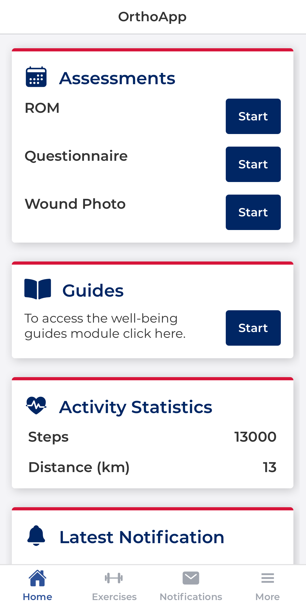
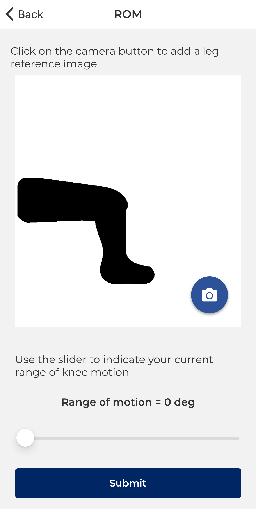
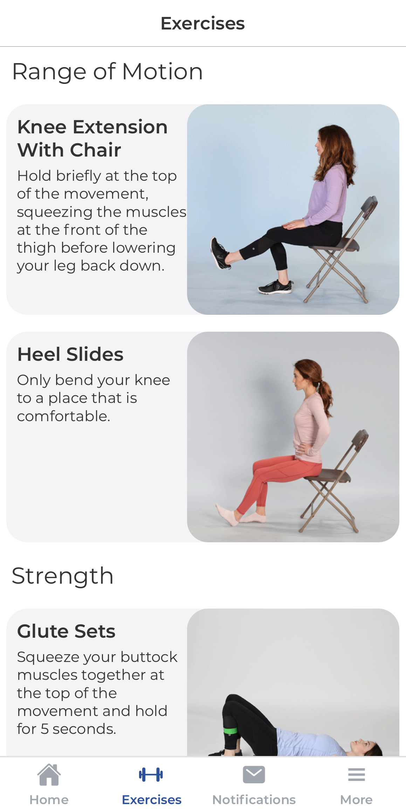
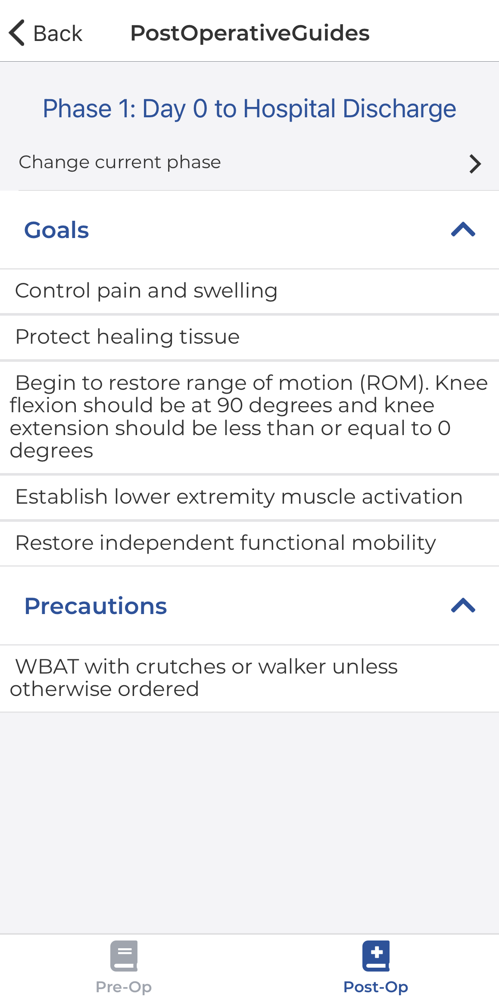
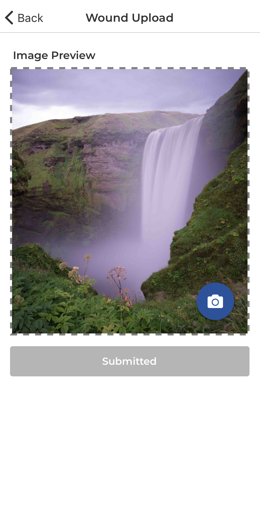
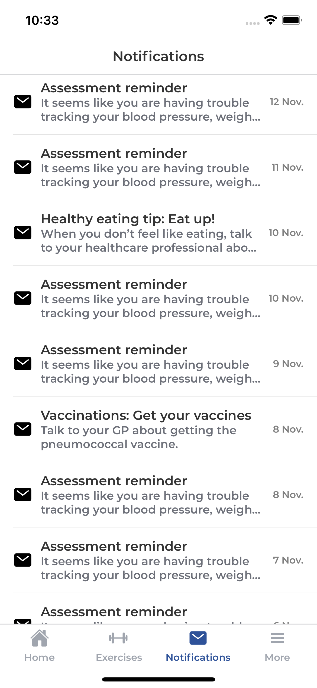
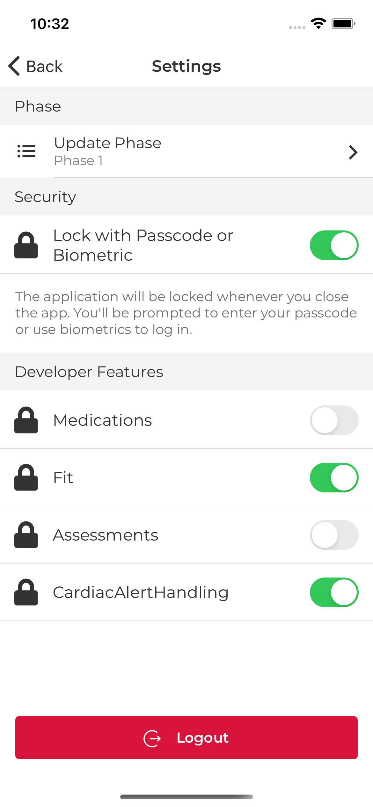

Thesis - Application for Postoperative care of Orthopaedic Patients
The demand for hip and knee replacement procedures is steadily rising each year as the prevalence of osteoarthritis increases. This mobile application provides an economical alternative to traditional rehabilitation for orthopaedic patients.
There’s a full report if you’re interested.







Main Application Screens